<div class="container">
    <div class="row topspace">
        <article class="col-sm-8 maincontent">
            <div class="your-class">
                <div>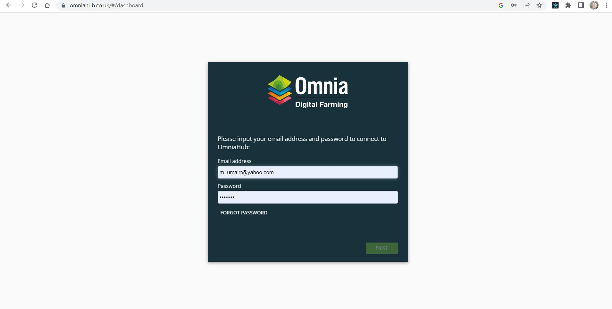</div>
                <div>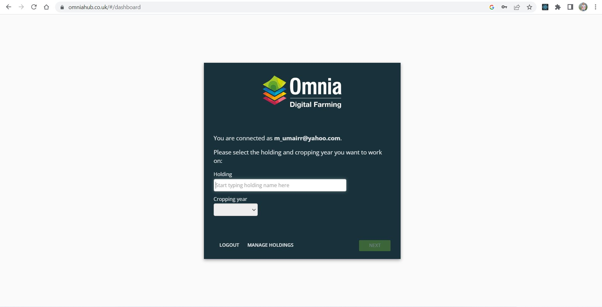</div>
                <div></div>
                <div>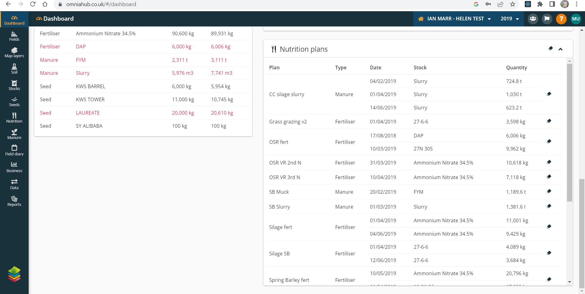</div>
                <div>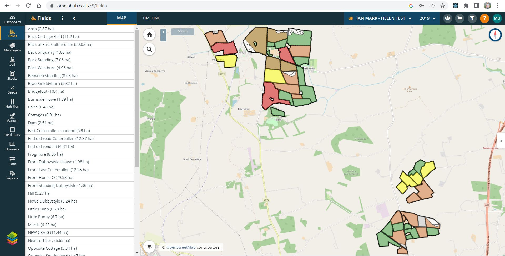</div>
                <div>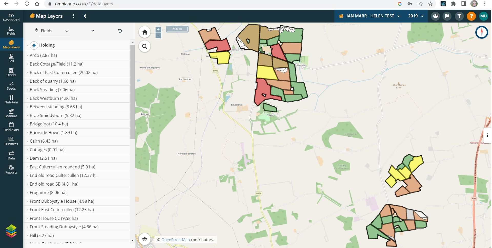</div>
                <div>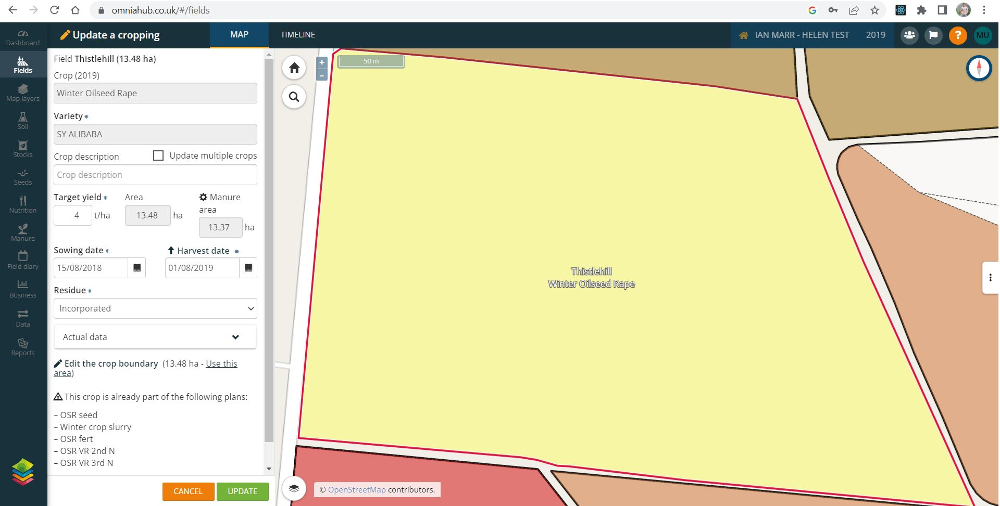</div>
                <div>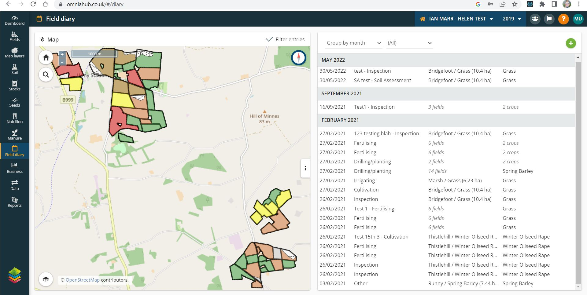</div>
                <div>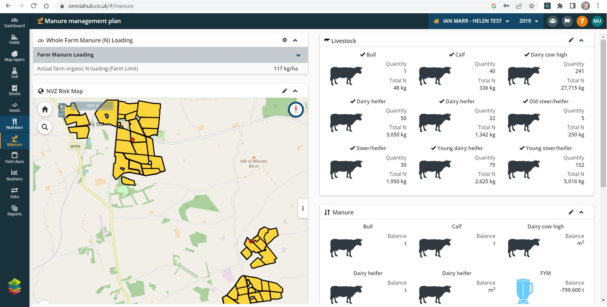</div>
                <div>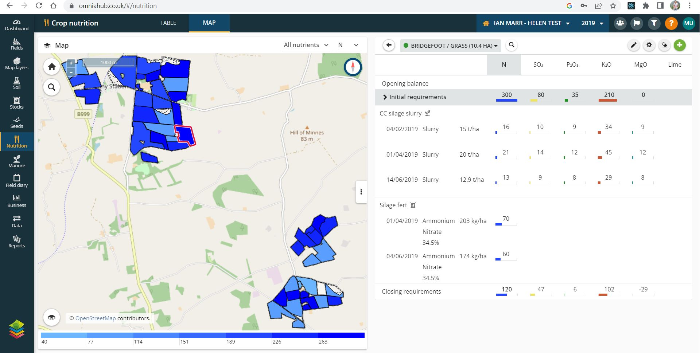</div>
                <div>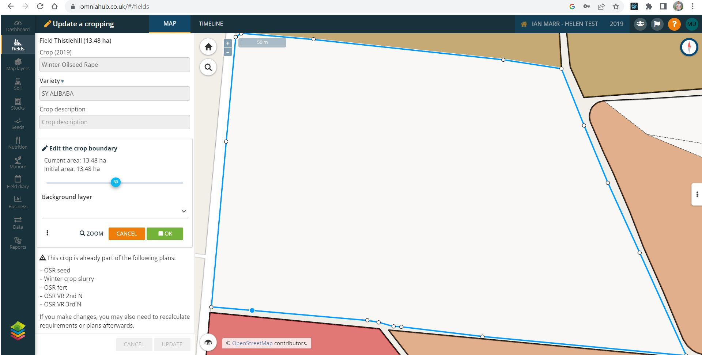</div>
                <div>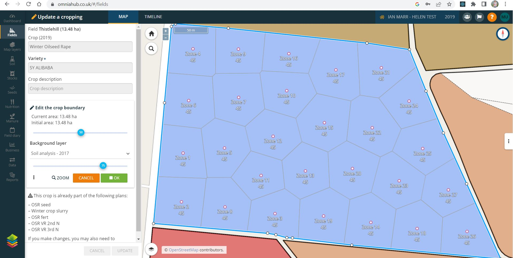</div>
                <div>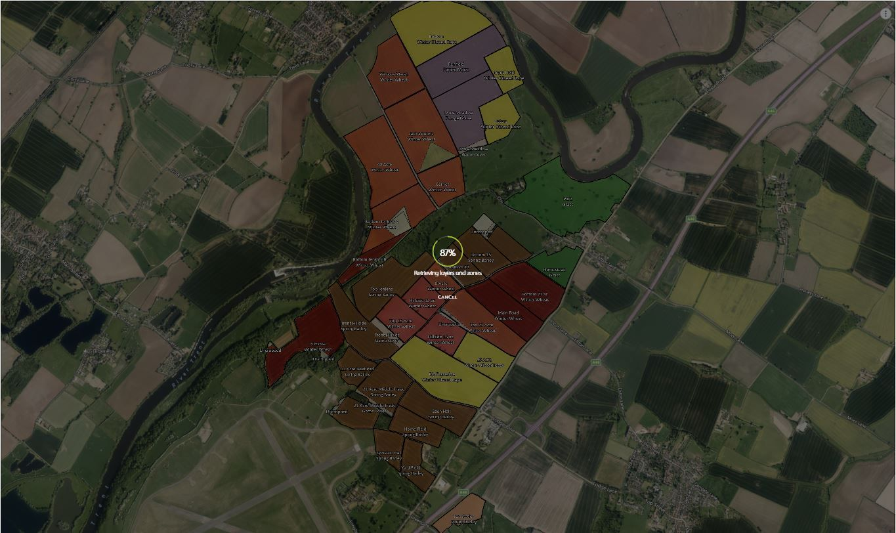</div>
                <div>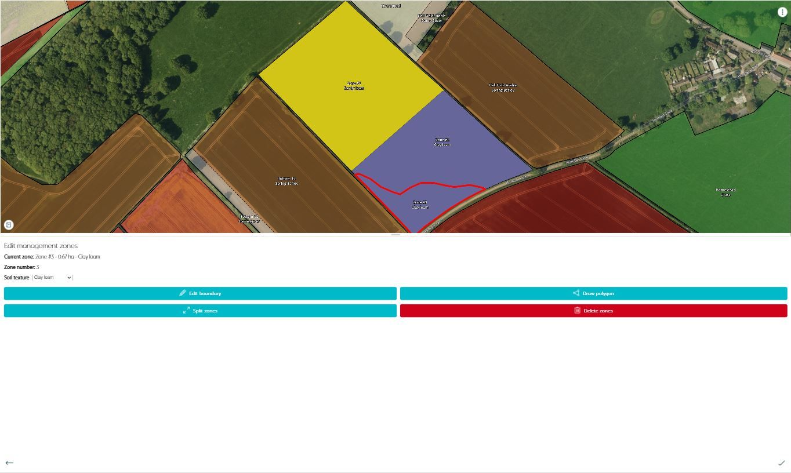</div>
                <div>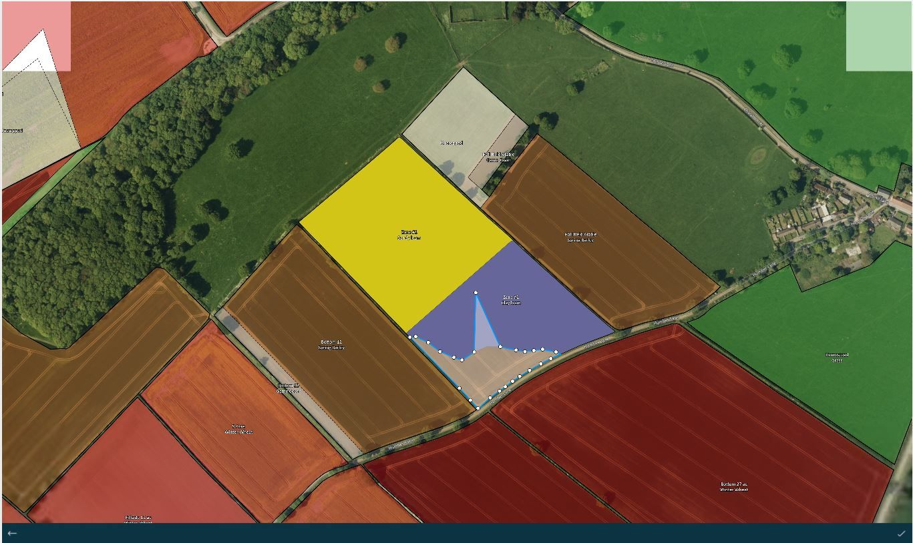</div>
                <div>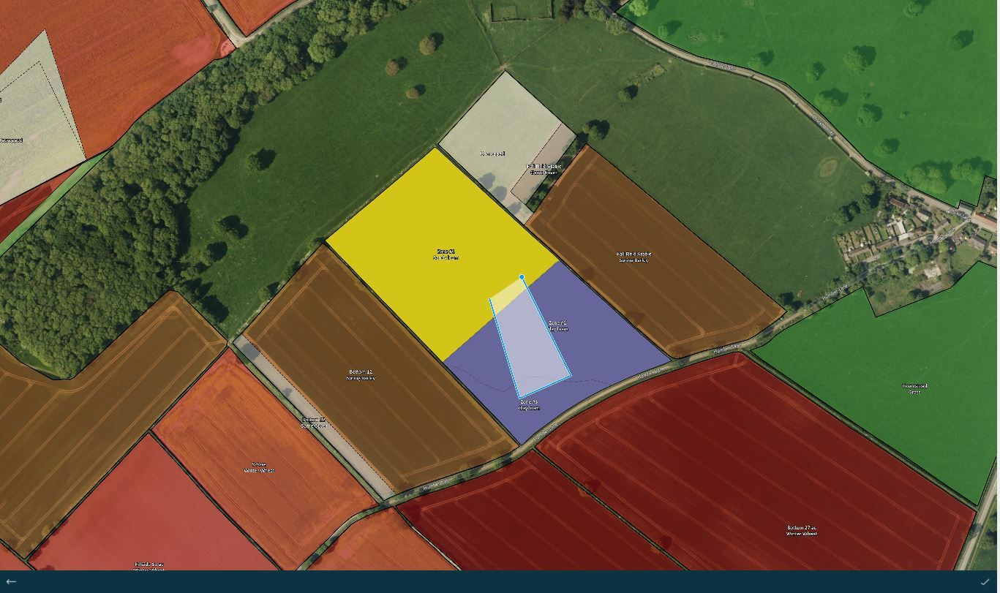</div>
                <div>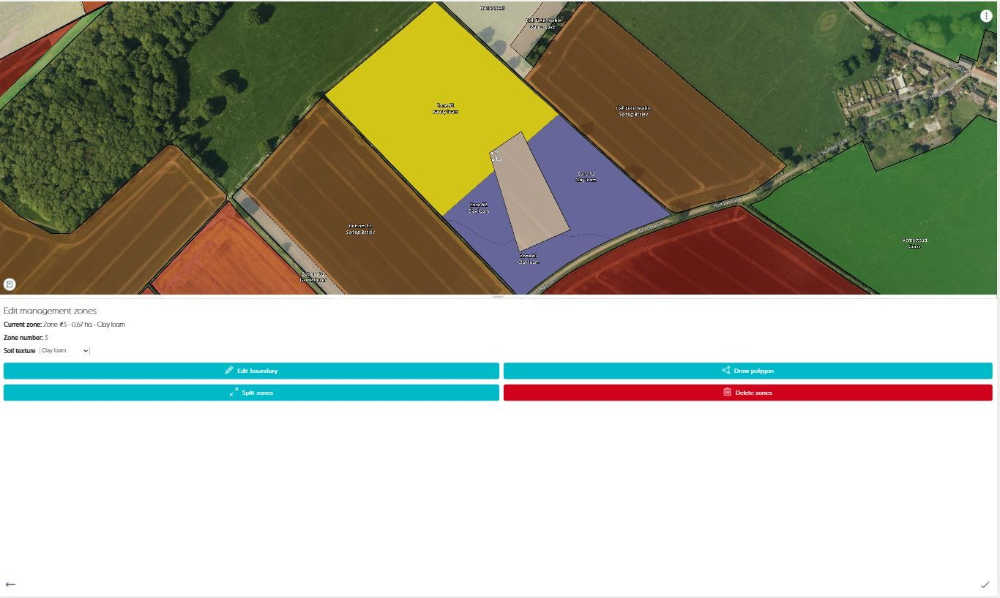</div>
            </div>
            <br>
            <p>As agronomists and professional advisors we are continually investigating new technologies and working
                practices to increase productivity, efficiency and profitability.
                That's why we developed Omnia, to tie together the newest technologies with expert insight to help
                growers improve their efficiency, productivity and profitability. By targeting agronomy at its core,
                Omnia makes it easier than ever for growers and agronomists to access and interpret their information to
                make management decisions.</p>
            <br>
            <p>The central idea behind Omnia was to create a platform which could host, manage and inform, rather than
                just store data, putting the user in control.</p>
            <br>
            <p>This was an outsource project that I won over Upwork during my freelance work. It was a nice team effort
                and helped me learn and develop new features for a more broader user base. My prime responsibility in
                the task was to handle the crop boundary drawing, editing and deletion primarily for the mobile version
                of the app.</p>
        </article>
        <aside class="col-md-4 sidebar sidebar-left">
            <div class="widget">
                <ul class="list-group">
                    <li class="list-group-item pull-left">
                        <h4 class="custom-subsubheader">Freelance Project</h4>
                        <p><strong>2018</strong></p>
                        <p>Website (Login protected): <a href="https://www.omniahub.co.uk/" target="_blank">View</a></p>
                    </li>
                </ul>
            </div>
        </aside>
    </div>
</div>